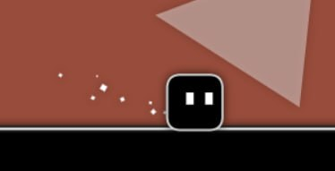
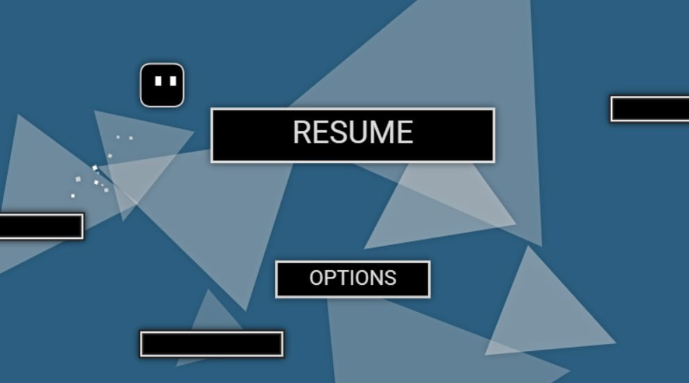
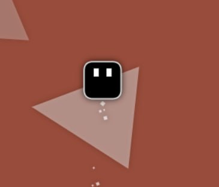
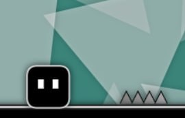
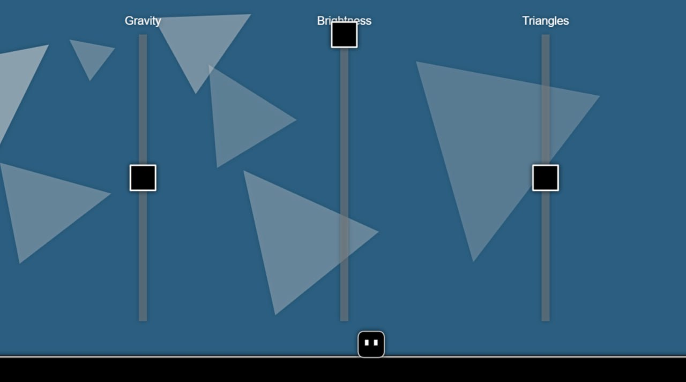

The goal of Pause Former is simple: go through the obstacle with the pause button and sliders to finish the level.
- Use the arrow keys and WASD to move.

- Press 'T' to pause and strategize your next move.

- Press spacebar to jump and avoid the spike!

- Watch out for the spikes!

- Use siders and pause strategically to plan your next move.

- Avoid falling and finish the level!!